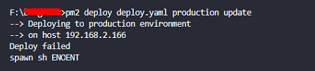

pm2（process manager）是一个进程管理工具，维护一个进程列表，可以用它来管理你的node进程，负责所有正在运行的进程，并查看node进程的状态，也支持性能监控，负载均衡等功能。
1、pm2简介
pm2（process manager）是一个进程管理工具，维护一个进程列表，可以用它来管理你的node进程，负责所有正在运行的进程，并查看node进程的状态，也支持性能监控，负载均衡等功能。
1.1、使用pm2管理的node程序的好处
- 监听文件变化，自动重启程序
- 支持性能监控
- 负载均衡
- 程序崩溃自动重启
- 服务器重新启动时自动重新启动
- 自动化部署项目
2、pm2安装与使用
2.1、全局安装
1 | npm install pm2 -g |
2.2、常用命令
启动一个node程序
1
pm2 start start.js
启动进程并指定应用的程序名
1
pm2 start app.js --name application1
集群模式启动
1
2
3// -i 表示 number-instances 实例数量
// max 表示 PM2将自动检测可用CPU的数量 可以自己指定数量
pm2 start start.js -i max添加进程监视
1
2// 在文件改变的时候会重新启动程序
pm2 start app.js --name start --watch列出所有进程
1
2pm2 list
pm2 ls // 简写
- 从进程列表中删除进程
1
2
3// pm2 delete [appname] | id
pm2 delete app // 指定进程名删除
pm2 delete 0 // 指定进程id删除 - 删除进程列表中所有进程
1
pm2 delete all
- 查看某个进程具体情况
1
pm2 describe app
查看进程的资源消耗情况
1
pm2 monit
重启进程
1
2pm2 restart app // 重启指定名称的进程
pm2 restart all // 重启所有进程查看进程日志
1
2pm2 logs app // 查看该名称进程的日志
pm2 logs all // 查看所有进程的日志设置pm2开机自启
开启启动设置，此处是CentOS系统，其他系统替换最后一个选项（可选项：ubuntu, centos, redhat, gentoo, systemd, darwin, amazon）
1 | pm2 startup centos |
然后按照提示需要输入的命令进行输入
最后保存设置
1 | pm2 save |
3、通过pm2配置文件来自动部署项目
确保服务器安装了pm2，没有安装的话先安装
1 | npm install pm2 -g |
3.1 在项目根目录下新建一个 deploy.yaml 文件
1 | # deploy.yaml |
3.2 配置git的ssh免密认证
在服务器中生成rsa公钥和私钥，当前是 centos7 下进行
前提服务器要安装git，没有安装的先安装git，已安装的跳过
1
yum –y install git
生成秘钥
1
ssh-keygen -t rsa -C "xxx@xxx.com"
在~/.ssh目录下有 id_rsa和 id_rsa.pub两个文件，其中id_rsa.pub文件里存放的即是公钥key。
登录到GitHub，点击右上方的头像，选择settings ，点击Add SSH key，把id_rsa.pub的内容复制到里面即可。
3.3 使用pm2部署项目
每次部署前先将本地的代码提交到远程git仓库
- 首次部署部署完成后，既可登陆服务器查看配置的目录下是否从git上拉取了项目
1
pm2 deploy deploy.yaml production setup
- 再次部署
1
pm2 deploy deploy.yaml production update
3.4 该部署流程同样适用前端项目
如vue-cli的项目，自动部署到服务器，自动执行npm run build 命令，生成的dist目录，指定到nginx的静态文件目录下。4、可能会遇到的坑
- 在window系统下 vscode的命令行程序，以及powershell执行部署的命令时，出现部署失败
1
pm2 deploy deploy.yaml production setup

解决方案：使用git命令行来执行
公众号
欢迎关注我的公众号“码上开发”，每天分享最新技术资讯。关注获取最新资源